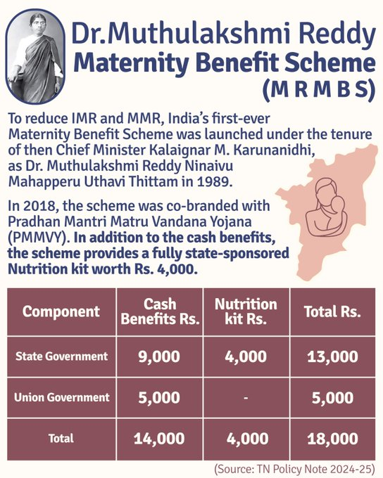

Dr. Muthulakshmi Reddy Maternity Benefit Scheme
The Dr. Muthulakshmi Reddy Maternity Benefit Scheme provides financial assistance of ₹18,000 to pregnant women from economically disadvantaged backgrounds. It ensures proper nutrition, medical care, and compensation for wage loss.
Benefits
- Financial assistance of ₹18,000 in installments.
- Nutrition kit with essential supplements and food items.
- Compensation for wage loss during pregnancy.
Eligibility Criteria
The pregnant mother must be at least 19 years old. The benefits are available for only two deliveries per eligible mother.
Installments Breakdown
| Installment | Condition | Amount (₹) |
|---|---|---|
| I | Antenatal registration before 12 weeks | 2,000 |
| Kind Benefit | Completion of third month (Nutrition Kit) | 2,000 |
| II | After 4 months | 2,000 |
| Kind Benefit | Second Nutrition Kit | 2,000 |
| III | After delivery | 4,000 |
| IV | After vaccination doses | 4,000 |
| V | After Measles Rubella vaccination | 2,000 |
Nutrition Kit
The kit contains essential supplements such as health mix powder, iron-folic acid syrup, protein biscuits, ghee, and dates.
